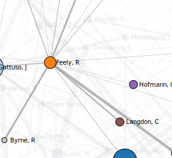
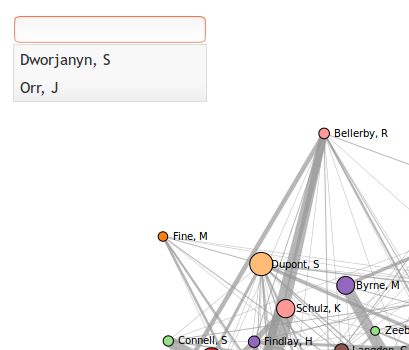
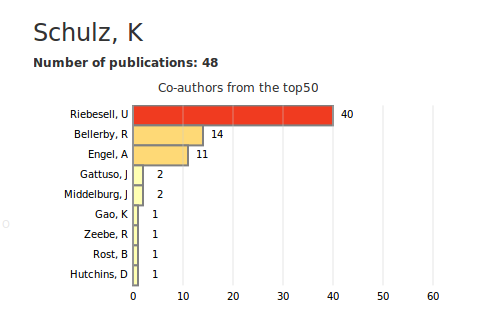
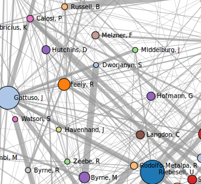
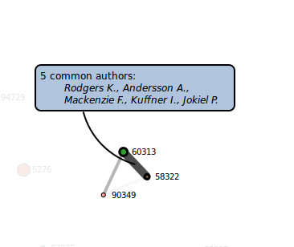
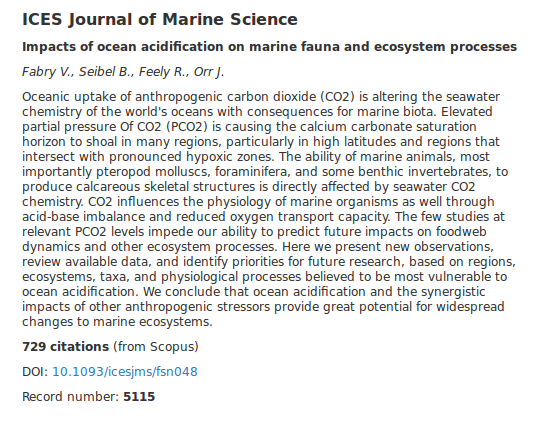
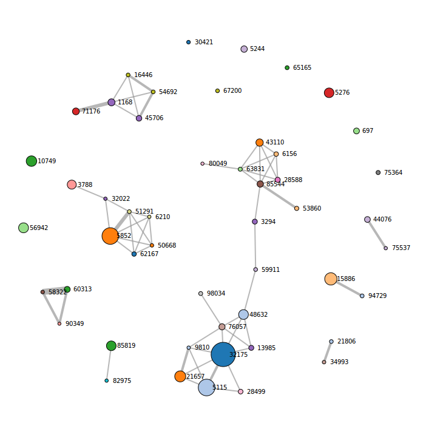

How to use the top 50 Authors dataviz:

Click on a node to explore coauthors.

You can also type an author name into the text box to find their co-authors.

Once a node is clicked, information about the author is displayed on the right side.
This information contains the number of publications by the author and also a row chart that
represents the different co-authors and the number of co-publications with the selected author.

Double click anywhere on the graph layout to clear selected connections.
How to use the top 50 Articles dataviz:

Pass the mouse over a node to display article information and over a link to display common authors between articles.

Once a node is moused over, information about the article is displayed on the right side.
This information contains the journal name, the title of the article, the authors, the abstract, the DOI,
the number of citations obtained from
Scopus and the record number
given in the OA-ICC bibliographic database.

Double click anywhere on the graph layout to clear the selected connections.